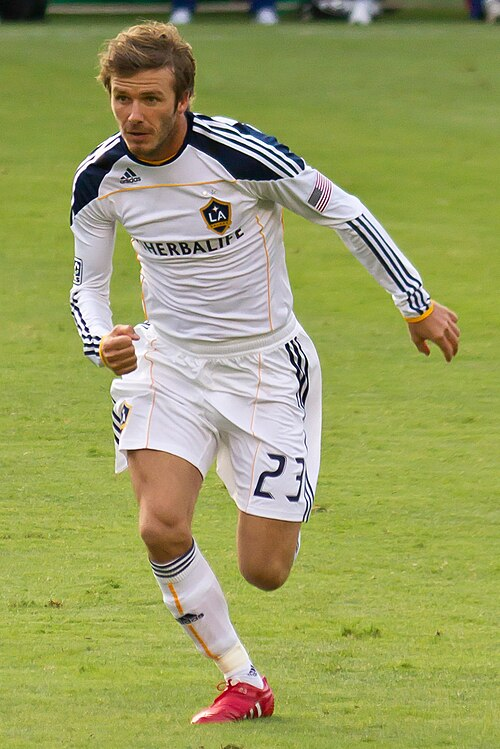
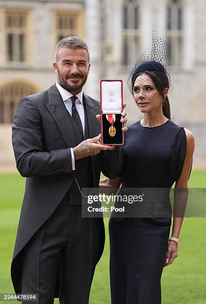
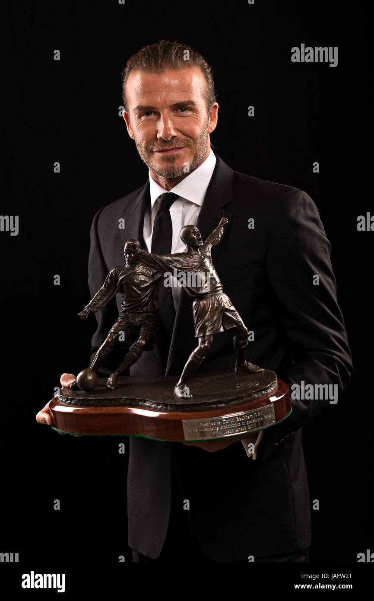
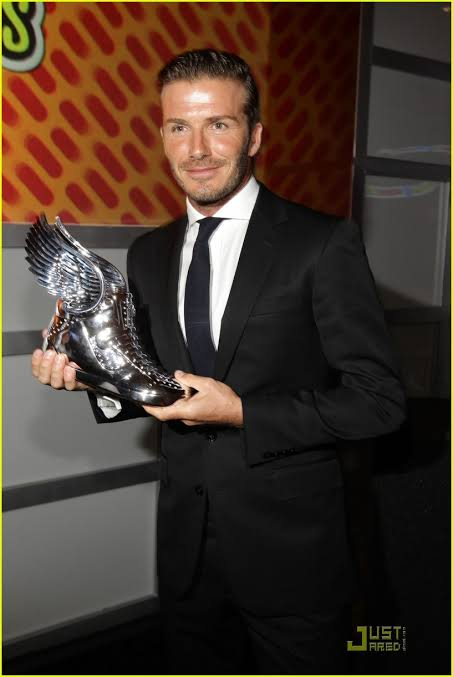

|
 |
Name | David Robert Joseph Beckham |
| Born | 2 May 1975 | |
| Nationality | England | |
| Education | Manchester United Football Club Academy | |
| Occupation | Footballer(Retired) | |
| Years active | 1992 to 2013 | |
| Height | 6 ft 0 in (1.83 m) | |
| Spouse | Victoria Beckham | |
| Children | 4 |
David Robert Joseph Beckham[29] was born on 2 May 1975 at Whipps Cross University Hospital in Leytonstone, London, England.He played for a local youth team called Ridgeway Rovers, which was coached by his father, along with Stuart Underwood and Steve Kirby.
Manchester United (1992–2003): Rose through the youth ranks to make his first-team debut, winning six Premier League titles and the UEFA Champions League in 1999. Preston North End (1995): Spent a brief loan spell early in his career, scoring two goals in five appearances. Real Madrid (2003–2007): Transferred as part of the "Galácticos" era, making 116 league appearances and winning the La Liga title in his final season. LA Galaxy (2007–2012): Made a historic move to Major League Soccer, helping popularize the sport in the US and winning consecutive MLS Cups in 2011 and 2012. AC Milan (2009, 2010): Had two successful loan spells in Italy during the MLS off-seasons to maintain top-tier fitness and competitive form. Paris Saint-Germain (2013): Finished his 21-year playing career with a five-month stint, winning the Ligue 1 title before retiring in May 2013. England National Team (1996–2009): Earned 115 caps, served as team captain for six years, and played in three FIFA World Cups.
| Year | Title |
|---|---|
| 2003 | England Player of the Year | 2008 | English Football Hall of Fame Inductee |
| 2018 | UEFA President's Award |
| 2021 | Premier League Hall of Fame Inductee |
| 2025 | Knighthood (Knight Bachelor) appointed by King Charles III for services to football and charity |
 |
 |
 |
copyright©